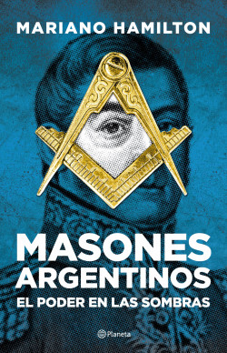
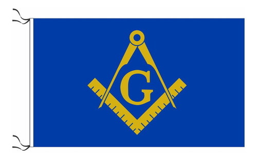
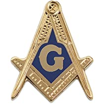
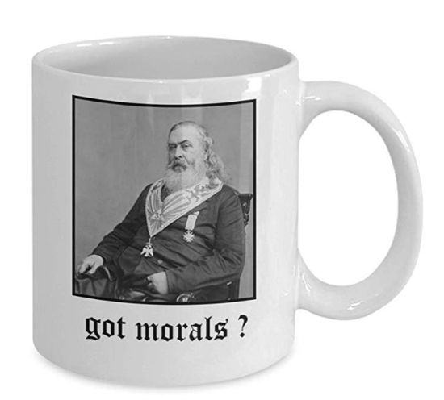

La masonería es una organización fraternal que existe desde hace cientos de años. Sus miembros se llaman masones y provienen de todos los ámbitos de la vida, incluidos médicos, abogados, maestros y hombres de negocios.
En esencia, la masonería se trata de ayudar a sus miembros a convertirse en mejores personas. Lo hace enseñando a sus miembros valores importantes como la fraternidad, la caridad y la verdad. Los masones se esfuerzan por hacer del mundo un lugar mejor viviendo estos valores en su vida diaria.
La masonería usa símbolos y rituales para enseñar sus lecciones. Estos símbolos y rituales a menudo se basan en la mampostería, un oficio que fue importante en la construcción de catedrales medievales y otras estructuras.
Uno de los aspectos más importantes de la masonería es su énfasis en el secreto. Los masones mantienen en privado algunos de sus rituales y enseñanzas, y solo los comparten con otros masones. Esto ha dado lugar a muchas especulaciones y teorías de conspiración sobre lo que sucede en las reuniones masónicas.
En general, la masonería es una sociedad de hombres que se dedican a hacer del mundo un lugar mejor al vivir de acuerdo con sus valores fundamentales de fraternidad, caridad y verdad. Si bien puede estar envuelto en secreto, tiene una larga y rica historia y continúa siendo una organización importante para muchas personas en la actualidad.
.
MERCHANDISING

Masones Argentinos - Mariano Hamilton
"Masones Argentinos" es un libro de Mariano Hamilton que explora la historia de la masonería en Argentina, desde sus orígenes hasta la actualidad. El autor destaca el papel que la masonería ha tenido en la construcción de la identidad nacional argentina y en la lucha por la libertad y la democracia.

Bandera Masonica G
La letra "G" en la masonería tiene múltiples interpretaciones y simbolismos. En primer lugar, se considera que representa la palabra "Geometry" (geometría en inglés), que es una disciplina que utiliza la lógica y las matemáticas para estudiar las formas y medidas de los objetos en el espacio. La geometría es importante en la masonería porque es vista como una herramienta para comprender la estructura del universo y la perfección divina.
Otra interpretación de la "G" es que representa la palabra "God" .

Pin 3er Grado - Maestro
Mide aproximadamente 1'' de alto
Respaldo de embrague de mariposa
Perfecto para solapas, corbatas, sombreros, chaquetas, bolsos, etc.
La artesanía de alta calidad proporcionará años de disfrute.
¡Hace un gran regalo!.

Taza Albert Pike
Disfruta de tu bebida preferida en esta taza con diseño masónico* que puedes personalizar, por ejemplo, con tu nombre o el nombre de tu Log:.
Ideal para regalo, como recuerdo de alguna ceremonia o para tu uso diario.
.